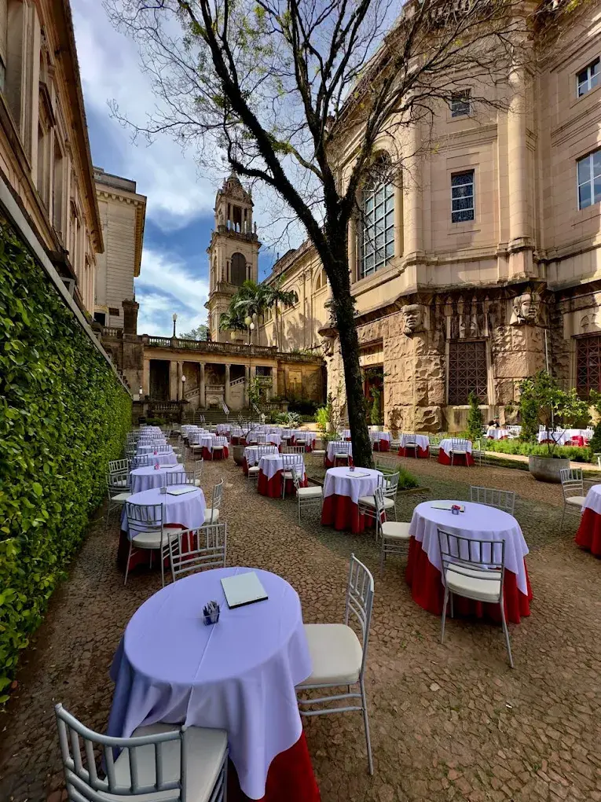
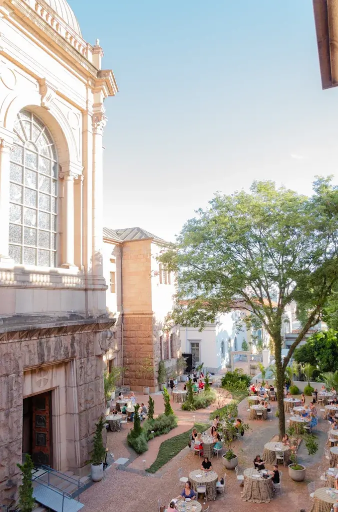
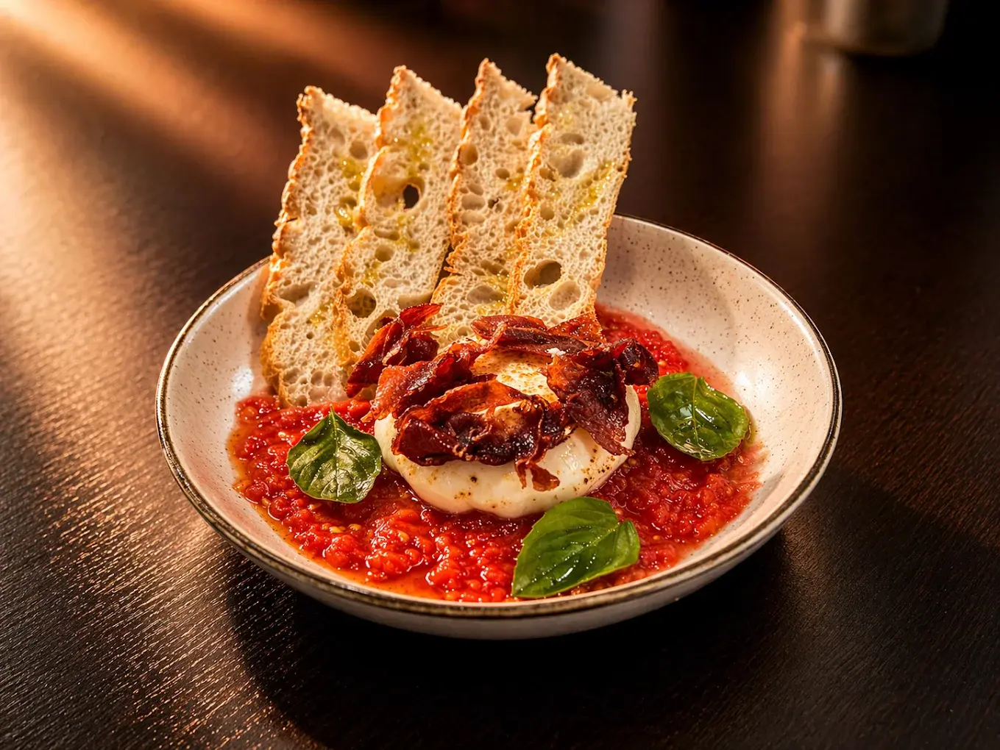
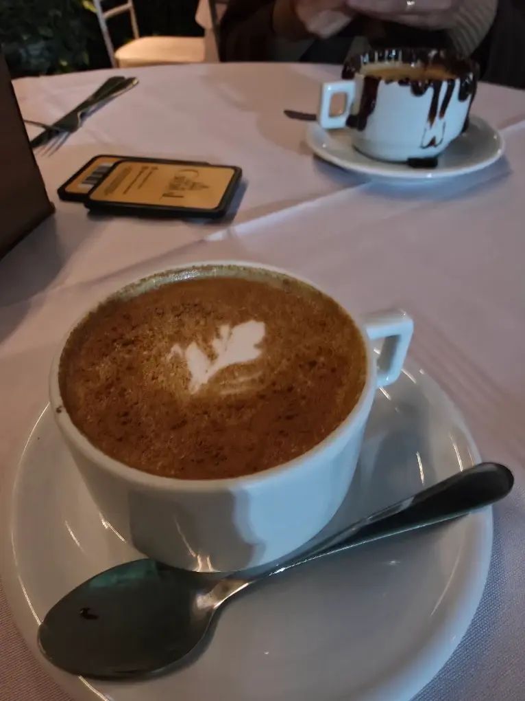
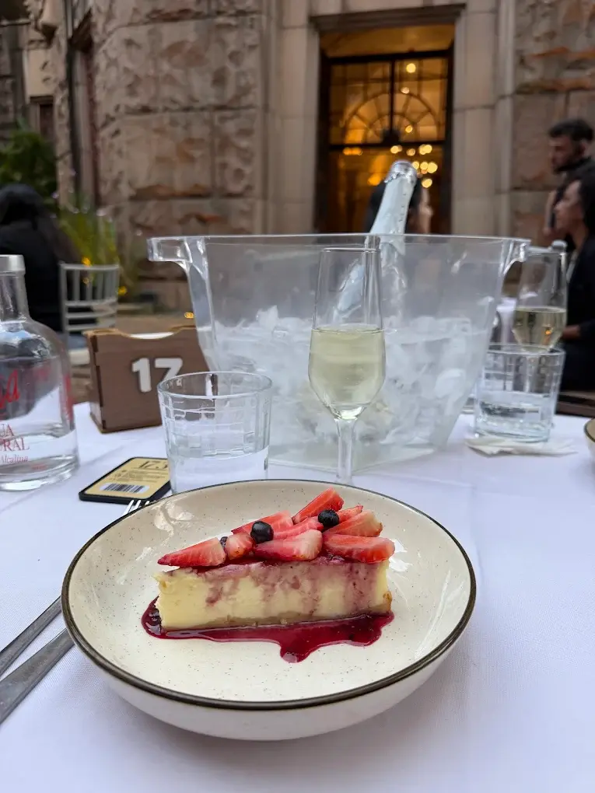

Café da Catedral
Café, doces e pratos servidos entre jardins e fachadas históricas. Um passeio para desacelerar no Centro.
Como chegarCentro Histórico · Porto Alegre
Nos jardins da Catedral Metropolitana, gastronomia, arte e mais de cem anos de história se encontram à mesa.

O Lugar
O Café da Catedral fica nos jardins da Catedral Metropolitana de Porto Alegre. Um recanto magnífico no coração da cidade, onde gastronomia, história, arquitetura, arte, cultura e religiosidade convivem em um só endereço.
Espaços
O Salão Nobre e o Café Iberê também estão aqui.
Café, doces e pratos servidos entre jardins e fachadas históricas. Um passeio para desacelerar no Centro.
Como chegarSalão tradicional da Catedral, cenário de casamentos, jantares e eventos corporativos com serviço de gastronomia autoral.
Faça seu evento conoscoA cozinha autoral da Fundação Iberê, com vista para o Guaíba, arquitetura de Álvaro Siza e menu assinado.
Ver cardápioSabores & Ambiente




Agenda
11ª edição do jantar harmonizado: visita guiada exclusiva pela Fundação Iberê e menu degustação em três tempos do chef Matheus Monteiro, com seleção de vinhos.
Caminhada com historiadora especializada em patrimônio pelos marcos da Praça da Matriz, incluindo a Catedral Metropolitana.
“Amei tudo… ambiente, acolhimento, qualidade e preço. Quero ir outra vez.”Avaliação no Google
Visite